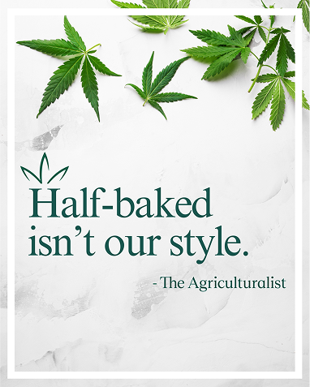
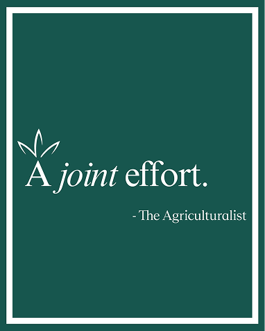
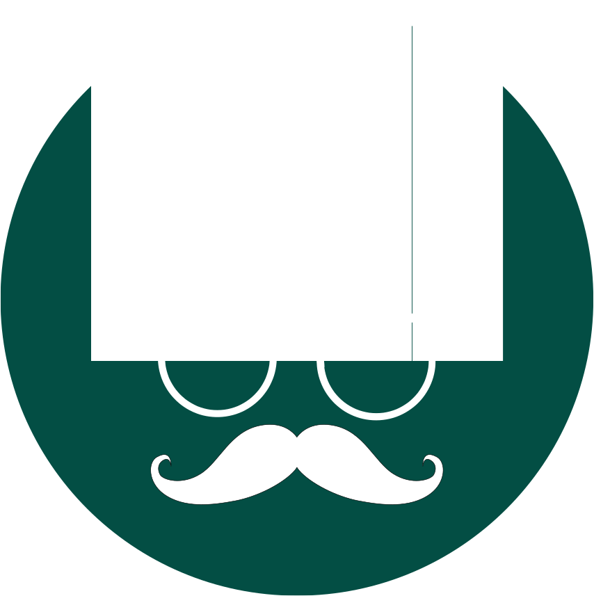

- 
- 
Meet Heard, our resident connoisseur
who provides personal recommendations for a high-quality cannabis experience

who provides personal recommendations for a high-quality cannabis experience